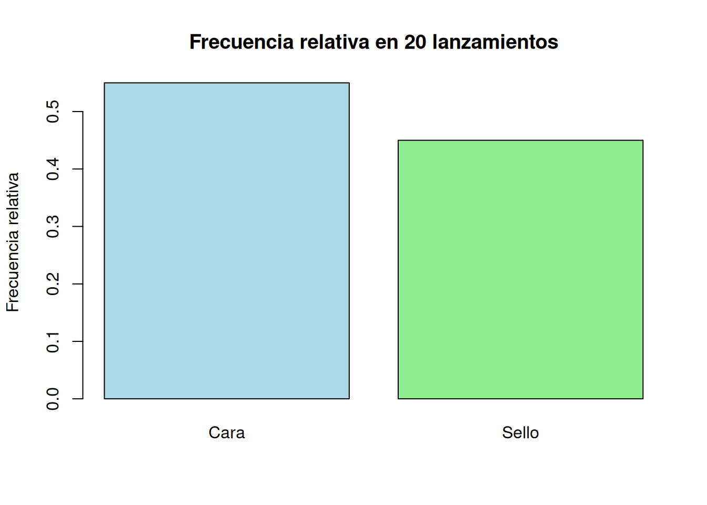
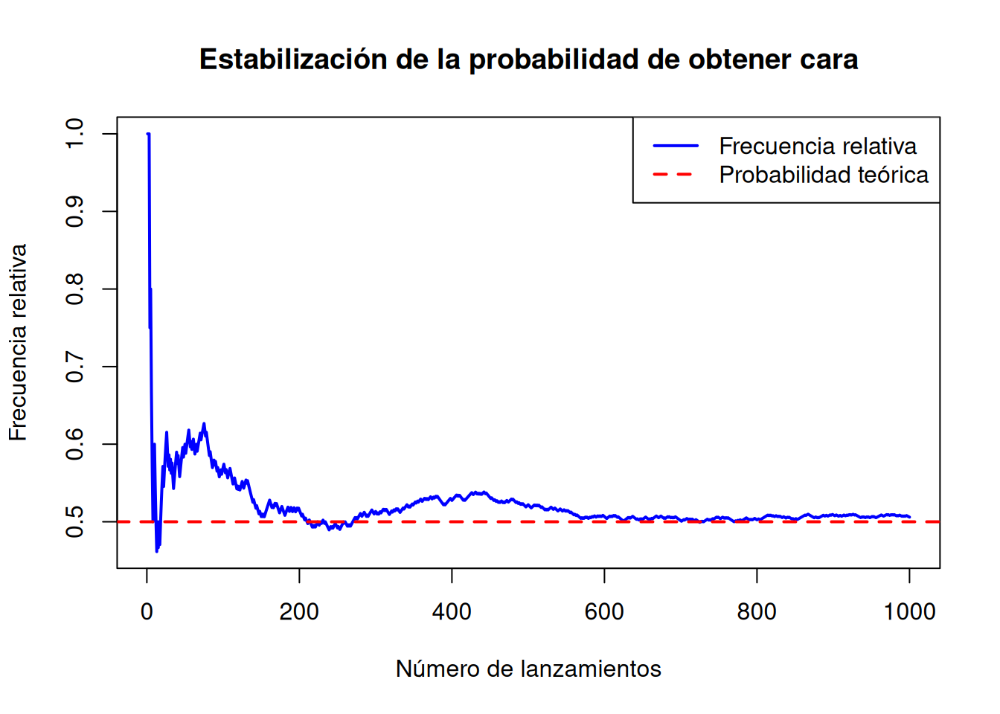

8 Fundamentos de probabilidad
8.1 Motivación ingenieril
En la vida diaria y en la ingeniería existen muchas situaciones en las que no se puede saber con certeza qué ocurrirá, pero sí se puede estimar qué tan probable es que ocurra un resultado.
Por ejemplo:
- Antes de lanzar una moneda no sabemos si saldrá cara o sello.
- Antes de lanzar un dado no sabemos qué número saldrá.
- Antes de probar un lote de productos no sabemos cuántos estarán defectuosos.
- Antes de medir la generación solar diaria no sabemos exactamente cuántos kWh se producirán.
- Antes de operar una máquina no sabemos si funcionará normalmente o presentará una falla.
La probabilidad permite estudiar este tipo de situaciones. No elimina la incertidumbre, pero ayuda a medirla y tomar mejores decisiones.
En ingeniería, la probabilidad es importante porque muchos procesos dependen de condiciones variables: clima, materiales, operación humana, fallas de equipos, demanda energética, tránsito vehicular o variaciones de producción.
8.2 Resultados de aprendizaje
Al finalizar esta unidad, el estudiante será capaz de:
- Diferenciar un experimento determinístico de un experimento aleatorio.
- Identificar el espacio muestral de un experimento.
- Reconocer eventos simples y compuestos.
- Calcular probabilidades mediante el enfoque clásico.
- Interpretar probabilidades frecuenciales mediante simulación.
- Verificar cálculos manuales utilizando R.
- Relacionar la probabilidad con problemas cotidianos y de ingeniería.
8.3 Concepto teórico
La probabilidad es una medida numérica que indica qué tan posible es que ocurra un evento.
Su valor siempre se encuentra entre 0 y 1:
\[ 0 \leq P(A) \leq 1 \]
Donde:
- \(P(A)=0\): el evento es imposible.
- \(P(A)=1\): el evento es seguro.
- \(0<P(A)<1\): el evento puede ocurrir, pero no con certeza.
También se puede expresar en porcentaje:
\[ P(A)=0.25 = 25\% \]
8.4 Experimento aleatorio
Un experimento aleatorio es un proceso cuyo resultado no se puede predecir con certeza antes de realizarlo.
8.4.1 Ejemplos cotidianos
| Experimento | Resultado posible |
|---|---|
| Lanzar una moneda | Cara o sello |
| Lanzar un dado | 1, 2, 3, 4, 5 o 6 |
| Elegir una carta | Cualquier carta de la baraja |
| Revisar un foco | Funciona o no funciona |
| Observar el clima | Soleado, nublado o lluvioso |
8.4.2 Ejemplos en ingeniería
| Carrera | Experimento aleatorio |
|---|---|
| Ingeniería Civil | Ensayar una probeta y observar si supera la resistencia mínima |
| Ingeniería Eléctrica | Observar si el voltaje se mantiene dentro del rango permitido |
| Ingeniería Industrial | Revisar si una pieza producida es defectuosa |
| Energías Renovables | Observar si la generación diaria supera cierto valor |
8.5 Espacio muestral
El espacio muestral es el conjunto de todos los resultados posibles de un experimento aleatorio. Se representa con la letra \(S\).
\[ S = \{\text{todos los resultados posibles}\} \]
8.6 Evento
Un evento es un subconjunto del espacio muestral. Es decir, es uno o varios resultados que nos interesa estudiar.
Se suele representar con letras mayúsculas como \(A\), \(B\), \(C\).
8.7 Tipos de eventos
8.7.1 Evento simple
Tiene un solo resultado.
Ejemplo:
\[ A = \{3\} \]
Obtener el número 3 al lanzar un dado.
8.7.2 Evento compuesto
Tiene más de un resultado.
Ejemplo:
\[ B = \{2,4,6\} \]
Obtener un número par al lanzar un dado.
8.8 Formulación matemática
Cuando todos los resultados son igualmente probables, se usa la definición clásica:
\[ P(A)=\frac{n(A)}{n(S)} \]
Donde:
- \(P(A)\): probabilidad del evento \(A\)
- \(n(A)\): número de casos favorables
- \(n(S)\): número total de casos posibles
8.9 Ejemplo resuelto 1: lanzamiento de un dado
8.9.1 Problema
Se lanza un dado común de seis caras. Calcular la probabilidad de obtener un número par.
8.10 Verificación en R
dado <- 1:6
evento_par <- dado[dado %% 2 == 0]
prob_par <- length(evento_par) / length(dado)
prob_par## [1] 0.58.11 Ejemplo resuelto 2: selección de una pieza defectuosa
8.13 Ejemplo resuelto 3: estado de un sistema eléctrico
8.13.1 Problema
Un sistema eléctrico puede encontrarse en tres estados:
\[ S = \{\text{Normal}, \text{Falla leve}, \text{Falla crítica}\} \]
Si se considera que los tres estados son igualmente probables, calcular la probabilidad de que el sistema esté en falla.
8.13.2 Paso 1: espacio muestral
\[ S = \{\text{Normal}, \text{Falla leve}, \text{Falla crítica}\} \]
\[ n(S)=3 \]
8.14 Verificación en R
estados <- c("Normal", "Falla leve", "Falla crítica")
fallas <- c("Falla leve", "Falla crítica")
prob_falla <- length(fallas) / length(estados)
prob_falla## [1] 0.66666678.15 Enfoque frecuencial de la probabilidad
La probabilidad también puede entenderse como la frecuencia relativa de ocurrencia de un evento cuando el experimento se repite muchas veces.
\[ P(A) \approx \frac{f_A}{n} \]
Donde:
- \(f_A\): número de veces que ocurrió el evento
- \(n\): número total de repeticiones
Mientras más veces se repite el experimento, la frecuencia relativa tiende a estabilizarse.
8.16 Simulación 1: lanzamiento de una moneda
Supongamos que lanzamos una moneda 20 veces.
set.seed(123)
moneda <- c("Cara", "Sello")
lanzamientos <- sample(moneda, size = 20, replace = TRUE)
lanzamientos## [1] "Cara" "Cara" "Cara" "Sello" "Cara" "Sello" "Sello" "Sello" "Cara" "Cara"
## [11] "Sello" "Sello" "Sello" "Cara" "Sello" "Cara" "Sello" "Cara" "Cara" "Cara"8.17 Gráfica de resultados
barplot(prop.table(tabla_moneda),
col = c("lightblue", "lightgreen"),
main = "Frecuencia relativa en 20 lanzamientos",
ylab = "Frecuencia relativa")
8.18 Simulación 2: muchos lanzamientos
Ahora lanzamos la moneda 1000 veces y observamos cómo se aproxima a 0.5.
set.seed(123)
n <- 1000
lanzamientos <- sample(moneda, size = n, replace = TRUE)
cara <- ifelse(lanzamientos == "Cara", 1, 0)
frecuencia_relativa <- cumsum(cara) / (1:n)
plot(frecuencia_relativa,
type = "l",
col = "blue",
lwd = 2,
main = "Estabilización de la probabilidad de obtener cara",
xlab = "Número de lanzamientos",
ylab = "Frecuencia relativa")
abline(h = 0.5, col = "red", lwd = 2, lty = 2)
legend("topright",
legend = c("Frecuencia relativa", "Probabilidad teórica"),
col = c("blue", "red"),
lty = c(1,2),
lwd = 2)
8.18.1 Interpretación
Al inicio, la frecuencia relativa puede variar mucho. Sin embargo, a medida que aumentan los lanzamientos, la proporción de caras tiende a acercarse a 0.5.
Este comportamiento es fundamental para comprender por qué la probabilidad se relaciona con la repetición de experimentos.
8.19 Operaciones básicas con eventos
8.19.1 Complemento de un evento
El complemento de un evento \(A\) es el evento que ocurre cuando \(A\) no ocurre.
\[ P(A^c)=1-P(A) \]
8.20 Unión de eventos
La unión de dos eventos \(A\) y \(B\) representa que ocurra \(A\), o \(B\), o ambos.
\[ P(A \cup B)=P(A)+P(B)-P(A\cap B) \]
8.21 Ejercicio guiado
En una empresa industrial se revisan 50 motores:
- 8 presentan falla eléctrica.
- 5 presentan falla mecánica.
- 2 presentan ambos tipos de falla.
Calcular:
- La probabilidad de falla eléctrica.
- La probabilidad de falla mecánica.
- La probabilidad de que un motor tenga falla eléctrica o mecánica.
- La probabilidad de que no tenga ninguna de estas fallas.
8.22 Solución del ejercicio guiado
8.22.1 Datos
\[ n(S)=50 \]
Falla eléctrica:
\[ n(E)=8 \]
Falla mecánica:
\[ n(M)=5 \]
Ambas fallas:
\[ n(E\cap M)=2 \]
8.23 Verificación del ejercicio en R
total <- 50
electrica <- 8
mecanica <- 5
ambas <- 2
p_electrica <- electrica / total
p_mecanica <- mecanica / total
p_ambas <- ambas / total
p_union <- p_electrica + p_mecanica - p_ambas
p_sin_falla <- 1 - p_union
c(p_electrica = p_electrica,
p_mecanica = p_mecanica,
p_union = p_union,
p_sin_falla = p_sin_falla)## p_electrica p_mecanica p_union p_sin_falla
## 0.16 0.10 0.22 0.788.24 Actividad práctica
Seleccione uno de los siguientes contextos y construya un problema de probabilidad:
- Resistencia de probetas de hormigón.
- Fallas en un circuito eléctrico.
- Productos defectuosos en una línea industrial.
- Días de baja generación solar.
- Congestión vehicular en una vía.
Para su problema:
- Defina el experimento aleatorio.
- Determine el espacio muestral.
- Defina al menos dos eventos.
- Calcule probabilidades manualmente.
- Verifique los resultados en R.
- Interprete técnicamente.
8.25 Aplicaciones por carrera
8.25.1 Ingeniería Civil
La probabilidad puede utilizarse para analizar la posibilidad de que una muestra de hormigón no alcance la resistencia mínima requerida.
Ejemplo:
Si de 20 probetas, 3 no cumplen la resistencia mínima:
\[ P(\text{No cumple})=\frac{3}{20}=0.15 \]
Esto indica que el 15% de las probetas evaluadas presenta incumplimiento.
8.25.2 Ingeniería Eléctrica
Permite estimar la probabilidad de falla en componentes eléctricos, variaciones de voltaje o interrupciones del servicio.
Ejemplo:
Si en 100 mediciones, 12 presentan voltaje fuera de rango:
\[ P(\text{Fuera de rango})=\frac{12}{100}=0.12 \]
8.26 Preguntas de autoevaluación
- ¿Qué diferencia existe entre experimento aleatorio y experimento determinístico?
- ¿Qué es el espacio muestral?
- ¿Qué diferencia hay entre evento simple y evento compuesto?
- ¿Qué significa que \(P(A)=0\)?
- ¿Qué significa que \(P(A)=1\)?
- ¿Cómo se calcula la probabilidad clásica?
- ¿Qué representa el complemento de un evento?
- ¿Para qué sirve la unión de eventos?
- ¿Por qué la simulación ayuda a entender la probabilidad?
- Mencione una aplicación de probabilidad en su carrera.
8.27 Resumen de la unidad
La probabilidad permite medir la incertidumbre asociada a eventos aleatorios. Sus conceptos básicos incluyen experimento aleatorio, espacio muestral, evento, probabilidad clásica, probabilidad frecuencial, complemento y unión de eventos.
En esta unidad se resolvieron ejemplos manuales y se verificaron los resultados con R. También se mostró cómo la simulación permite observar el comportamiento de la frecuencia relativa cuando un experimento se repite muchas veces.
La probabilidad es una herramienta fundamental para la ingeniería porque permite analizar riesgos, fallas, variabilidad y toma de decisiones bajo incertidumbre.